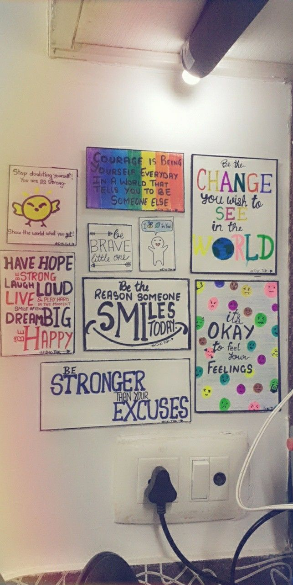
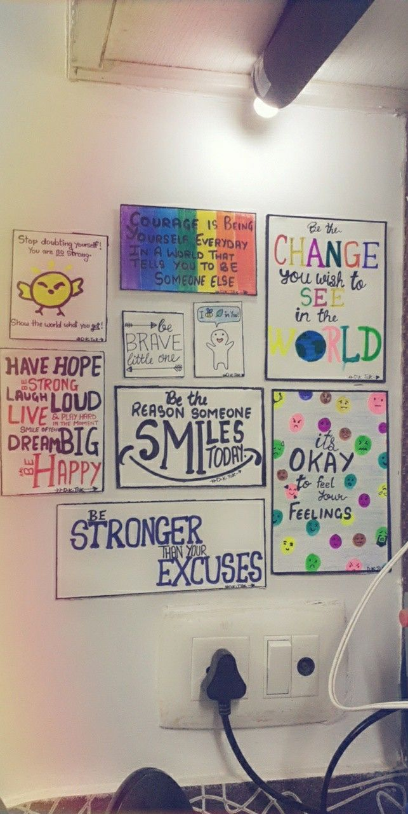
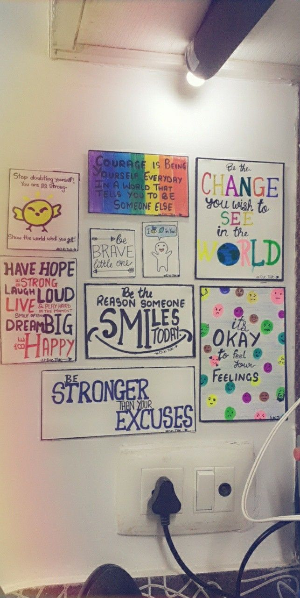

PORTFOLIO
 


I am Himanshu Singh from Vellore Institute Of Technology,(Vellore) Tamilnadu, India. Doing BTech in Computer Science with Information Security. I have done Skills of: DSA in Java (Data Structures and Algorithms),MERN Full Stack, JAVA Full Stack. DSA in Java refers to the study and implementation of fundamental data structures and algorithms using the Java programming language. This involves understanding and applying concepts such as arrays, linked lists, stacks, queues, trees, and various sorting and searching algorithms. Mastering DSA in Java is crucial for developing efficient and optimized software solutions. MERN stands for MongoDB, Express.js, React.js, and Node.js. It represents a full-stack development stack that is widely used for building web applications. JAVA Full Stack: Front-end: Using Java-based frameworks such as Spring Boot or JavaServer Faces (JSF) for building the user interface. Back-end: Employing Java for server-side development, often with frameworks like Spring or Java EE.

Website design encompasses the process of creating and structuring the visual elements and layout of a website.use various tools and techniques to create an attractive and intuitive interface that aligns with the purpose and goals of the website. Key aspects of website design include graphic design, user interface (UI) design, and user experience (UX) design.
UX design focuses on the overall user experience, including research and testing, UI design is concerned with the visual and interactive aspects of the product. Successful collaboration between the two is essential for creating digital products that are both aesthetically pleasing and user-friendly.
Content creators play a vital role in shaping digital landscapes, providing valuable information, entertainment, and inspiration to diverse audiences across different online platforms. Their responsibilities encompass a broad spectrum, and success often involves a combination of creativity, adaptability, and strategic thinking.